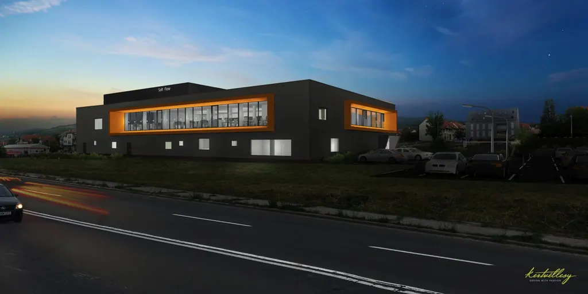
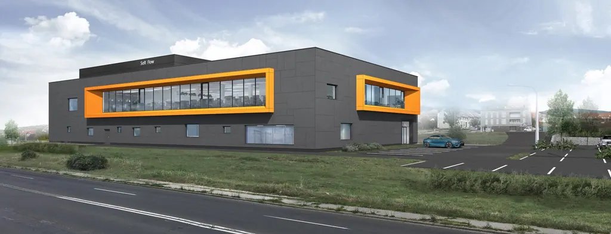
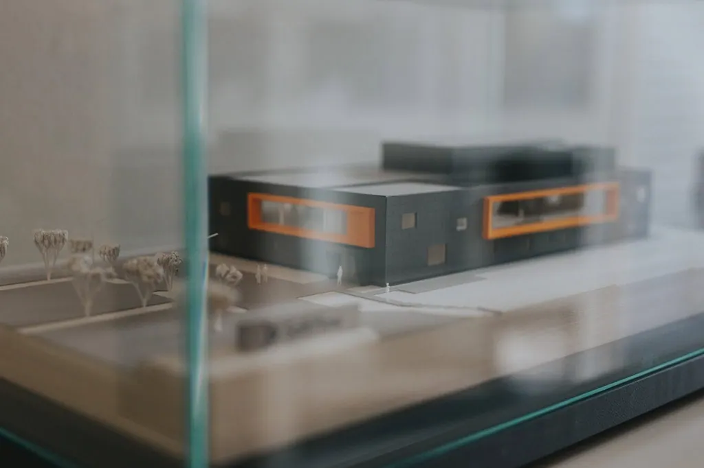
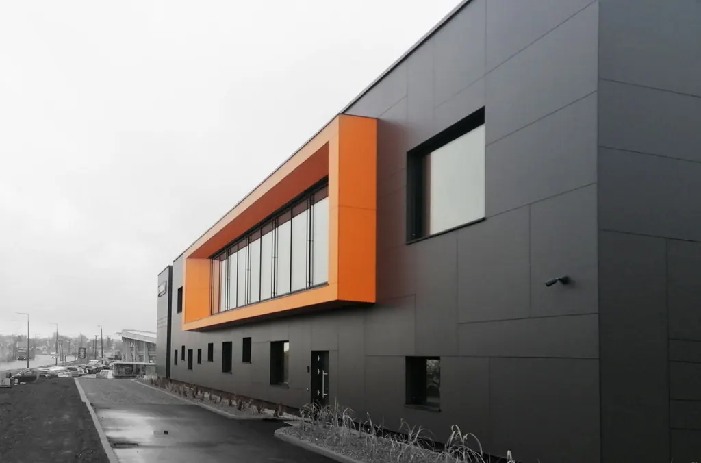
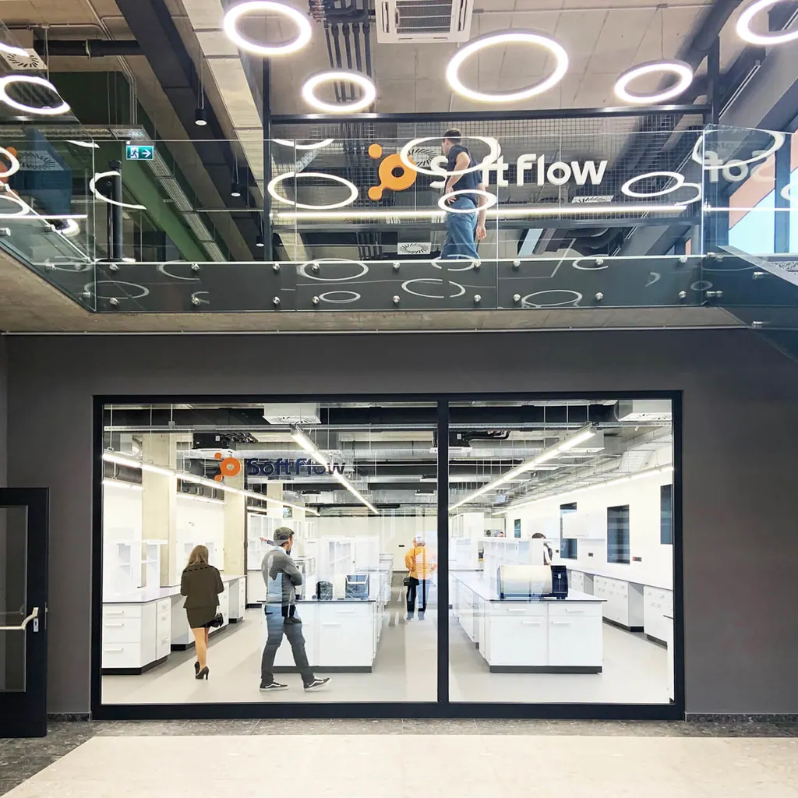
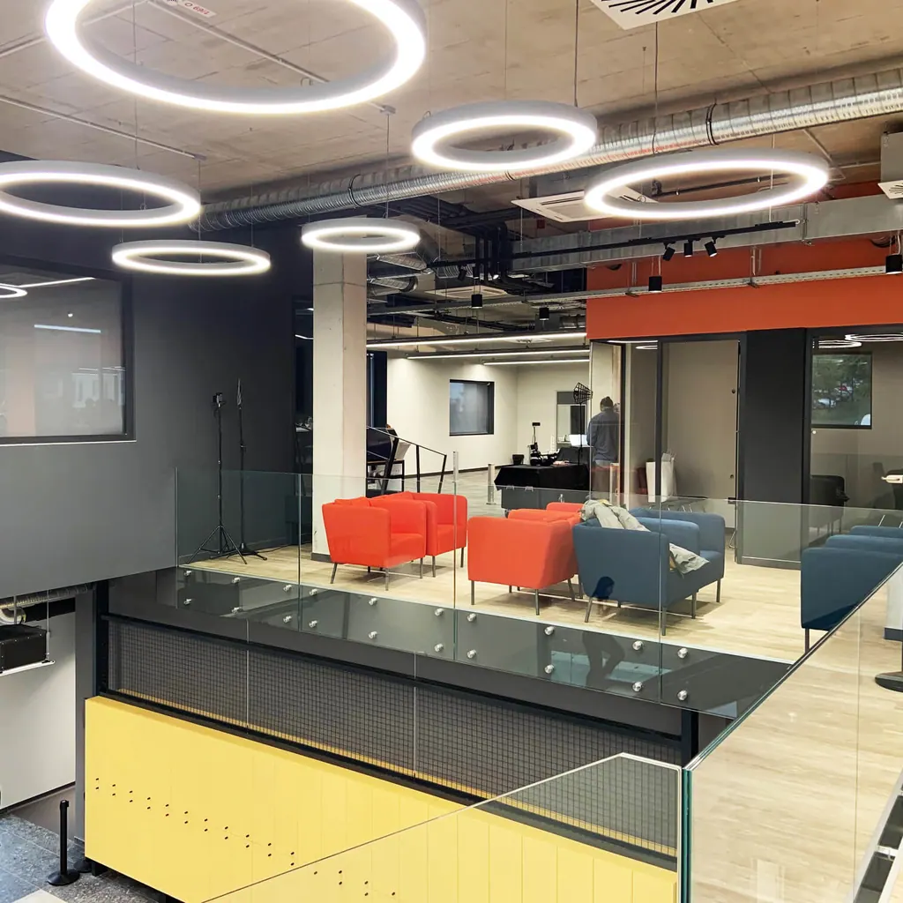

Pécs, Soft Flow kutató-fejlesztő központ
- Típus
- ipari épület, kereskedelmi
- Stílus
- indusztriális, modern
- Képek
- 7

02 / 07 
03 / 07 
04 / 07 
05 / 07 
06 / 07 
07 / 07






Hasonló típus